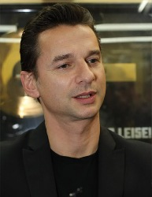
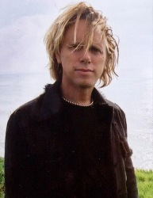
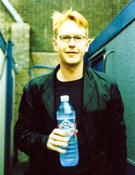

Dave Gahan

Dave Gahan, wokalista kultowego zespołu Depeche Mode, od ponad 20 lat jest jednym z najbardziej charyzmatycznych frontmanów w historii elektronicznego popu i rocka. Ze szkolnego rozrabiaki z Essex wyrósł na uwielbianego na całym świecie gwiazdora. Dave do Depeche Mode dołączył w 1980 roku i to dzięki niemu powstał niepowtarzalny styl grupy. Jego początkowo łagodny i nieco chimeryczny wokal, znany chociażby z "Just Can't Get Enough" i "Dreaming of Me", pod wpływem mrocznych tekstów i kompozycji klawiszowca Martina L. Gore'a ewoluował w kierunku industrialnego rocka z elementami gotyku i synth popu. W 1993 roku Gahan zamieszkał w Los Angeles i tam zainspirowany brzmieniem grunge'u po raz kolejny zmienił image. Zapuścił włosy i brodę, co oburzyło wielu starszych fanów Depeche Mode. Zmieniła się też muzyka grupy i Depeche Mode dołączył do pierwszej ligi kapel rockowych. Zespół wydał album "Songs Of Faith And Devotion", który osiągnął bezprecedensowy sukces na całym świecie. Niestety prawie w tym samym czasie Dave pogrążył się w narkotykach. Uzależnienie trwało kilka lat, ale w połowie lat 90. wokalista zerwał z heroiną, przeszedł terapię odwykową i już w 1997 roku wraz z Depeche Mode nagrał album "Ultra". W czerwcu 2003 roku ukazała się pierwsza solowa płyta Gahana - "Paper Monsters". Po raz kolejny artysta zaczął wszystko od zera. Wcześniej zobowiązania zawodowe, problemy osobiste, brak wiary w siebie uniemożliwiały mu odnalezienie własnego prawdziwego głosu. Jak sam mówił stąd właśnie wziął się tytuł płyty - Papierowe monstra - sam stworzyłem te potwory, a one z każdym rokiem robiły się coraz większe. Ale uświadomiłem sobie wreszcie, że to ja sam je sobie wymyśliłem. Kompozytorem materiału był multi-instrumentalista z Nowego Jorku, a prywatnie przyjaciel Gahana - Knox Chandler. Natomiast produkcją zajął się Ken Thomas. Na pierwszym singlu ukazał się utwór "Dirty Sticky Floors". Drugi solowy album wokalisty Depeche Mode, zatytułowany "Hourglass", światło dzienne ujrzał w październiku 2007 roku. Dave skomponował i wyprodukował wszystkie utwory przy udziale Christiana Eignera i Andrew Phillpotta - członków zespołu koncertowego towarzyszącego DM, zaś nagrań dokonano w nowojorskim studio 11th Floor Studios Gahana.
Martin Lee Gore

Martin L. Gore, autor piosenek i jeden z założycieli Depeche Mode, urodził się 23 lipca 1961 w brytyjskim Basildon, hrabstwo Essex. Początkowo pozostawał w cieniu Vince'a Clarke, jednak gdy ten zdecydował się opuścić szeregi DM, to na Gore'a spadła rola osoby odpowiedzialnej za pisanie piosenek. Druga płyta zespołu - "A Broken Frame" - to już w całości dzieło Martina. Od tego momentu piosenki Depeche Mode zaczęły poruszać tematy poważniejsze niż za czasów Vince'a, a z czasem, jak sam Gore przyznał w jednym z wywiadów, zaczęły dotyczyć przede wszystkim jego ulubionych tematów: bólu, cierpienia i... seksu. Wśród tekstów piosenek Depeche Mode pochodzących spod pióra Martina Gore nie brak jednak nawiązań do sytuacji politycznej, problemów ekologii czy też odniesień religijnych. To właśnie teksty Gore'a zapewniają Depeche Mode tak liczne grono wiernych "wyznawców", a fani bardzo mocno identyfikują się z przesłaniami Martina. Gore oprócz pisania tekstów czasami staje też za mikrofonem. Jego wokalną specjalnością są wolne kompozycje, w których świetnie sprawdza się jego charakterystyczna, wysoka barwa głosu. W przeszłości Gore bardzo często szokował swoim ubiorem, w którym pojawiały się akcenty sado-masochistyczne, nie brakowało sukienek, pomalowanych ust i paznokci. W jednym z wywiadów przyznał jednak, ze wyrósł z tego, gdy jego córki zaczęły zadawać dużo pytań przeglądając stare zdjęcia, Martin Gore próbował swoich sił także solo. Jednak twierdził zawsze, że czuje się przede wszystkim autorem piosenek dla Depeche Mode i w związku z tym nie będzie wykorzystywał swoich nowych kompozycji na potrzeby solowe. Stąd obie solowe płyty Gore'a ("Counterfeit E.P." oraz "Counterfeit 2") to tak naprawdę zbiory coverów jego ulubionych wykonawców: na pierwszej znalazły się kompozycje takich artystów jak Tuxedomoon, Durutti Column, Comsat Angels, Spark czy Joe Crow, a na drugiej docenieni zostali Nick Cave, David Essex, David Bowie, The Velvet Underground oraz John Lennon. Płycie "Counterfeit 2" towarzyszyła krótka trasa koncertowa po Europie i Stanach Zjednoczonych. Prywatnie, przez 11 lat (od sierpnia 1994 do połowy roku 2005) Martin związany był węzłem małżeńskim ze swoją długoletnią przyjaciółką Suzanne. To z nią doczekał się trójki dzieci - mają dwie córki Viva Lee (1991) i Eva Lee (1995) oraz syna Calo Leon (2002). Decyzja o rozwodzie mocno wpłynęła na artystę, który szczególnie przeżywał rozstanie ze swoimi dziećmi. To dla nich powstała więc piosenka "Precious".
Andrew Fletcher

Andrew John Fletcher (znany również jako "Fletch") przyszedł na świat 8 lipca 1961 roku w Nottingham w Anglii. Obecny członek Depeche Mode swoje pierwsze kroki w roli muzyka stawiał w grupie założonej wspólnie z kolegą Vincem Clarkiem, gdzie pełnił rolę basisty. W niedługim jednak czasie dołączył do nich Martin Gore, który w znacznym stopniu przyczynił się do zmiany obranego przez grupę stylu muzycznego na rzecz muzyki elektronicznej. Z czasem w szeregach zespołu pojawił się nowy wokalista Dave Gahan, a nazwa zespołu została ostatecznie zmieniona na Depeche Mode. Fletch, który nigdy nie był głównym muzykiem w zespole przejął rolę menedżera, w której sprawdza się bardzo dobrze aż do dzisiaj. Jest on również jedynym członkiem zespołu, który nigdy nie skomponował utworu dla Depeche Mode, jednakże jak zostało to podkreślone w jednym z wywiadów, swojego czasu próbował to robić. W zespole Fletcher odpowiedzialny jest między innymi za przekazywanie fanom oraz prasie informacji o zespole, co w niektórych przypadkach wręcz zasługuje na miano Public Relation. To właśnie on był źródłem długo oczekiwanych informacji dotyczących pracy zespołu nad dwoma ostatnimi albumami, Exciter (2001 r.) oraz Playing The Angel (2004/2005 r.). Postrzegany jest również jako osoba, która scala ze sobą pozostałych członków grupy. To właśnie w głównej mierze dzięki niemu został zażegnany spór pomiędzy Gahanem a Gorem dotyczący autorstwa tekstów mających się znaleźć na ostatniej płycie zespołu. Od 14 lat Andy jest żonaty z Grainne, z którą ma dwójkę dzieci, Megan i Joe'a. Jego rodzice noszą imiona Joy oraz John a trójka rodzeństwa: Susan, Karen oraz Simon.